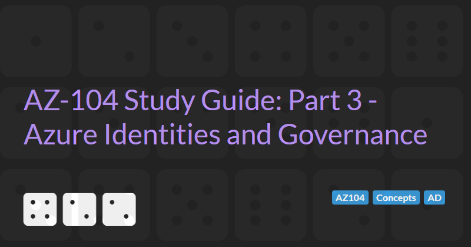

Managing Azure Identities and Governance
The AZ-104: Azure Administrator Associate certification requires subject matter expertise in implementing, managing, and monitoring an organization's Microsoft Azure environment, including virtual networks, storage, compute, identity, security, and governance.
In part 3 of the guide we will cover managing Azure Identities and governance which accounts for 15-20% of the exam score.
Azure Active Directory
Azure Active Directory (Azure AD), part of Microsoft Entra, is an enterprise identity service that provides single sign-on, multi-factor authentication, and conditional access to guard against 99.9 percent of cybersecurity attacks.
An on-premise Active Directory (also known as Windows Active Directory) offers different functionality to Azure Active Directory (such as LDAP). Synchronisation can be setup between Windows AD and Azure AD to enable single-sign on capabilities. Azure AD is focused towards web applications and web use cases.
An Azure Active Directory is automatically created when creating an Azure Subscription.
Azure Active Directory Pricing Tiers
Azure Active Directory has 3 main pricing tiers: Free, Premium 1 (P1) and Premium 2 (P2).
The free tier allows creating of up to 50,000 objects (users, groups, etc) and many of the capabilities of the other tiers.
P1 and P2 offer more capabilities such as:
- Custom logos
- Custom banned passwords
- Self-service passwords
- Group access management
- Advanced security and usage reports
- Dynamic groups
- Azure Information Protection integration
- SharePoint limited access
- Terms of Use
- Microsoft Cloud App Security Integration
P2 also offers additional capabilities:
- Vulnerabilities and risky accounts detection
- Risky events integration
- Risk-based conditional access policies
Basic Concepts
- Account / User
- A person or a program, the basis for authentication
- Person e.g. Joe Smith - joe@example.com = user name, password, multi-factor authentication
- Program e.g. App or Managed Identity = representation of a program or service
- Tenant
- A representation of an organisation
- Usually represented by a unique public domain name i.e. example.com
- Will be assigned a domain if not specified i.e. example.onmicrosoft.com
- A dedicated instance of Azure Active Directory
- Every Azure Account is part of at least one tenant.
- Tenants can have multiple account.
- Subscription
- An agreement with Microsoft to use Azure services, and how you are going to pay for those service.
- All azure resource get billed o the payment method of the subscription
- Multiple types of subscription are available (free, pay-as-you-go, enterprise etc.)
- Subscriptions can be assigned to a tenant. Not all tenants have subscriptions. Tenants my have multiple subscriptions.
- Resource Group
- A group for resources within a subscription
- All resources (VMs, web apps, storage accounts, public IP addresses, network interface cards, network security groups etc.) must belong to a resource group
- When a resource group is deleted all resources in that group are also deleted.
Creating an Azure Active Directory Tenant
- Go to the
Azure Active Directoryresource in the Azure Portal - In the
Overviewpanel, select theManage tenantsoption - In the
Switch tenantpage, select the+ Createoption - Select Azure Active Directory or Azure Active Directory (B2C)
- Enter the org name, unique initial domain (xxx.onmicrosoft.com), and select the region where the AD data will be stored (taking into account any data sovereignty issues)
- Complete the CAPTCHA (if required)
- The tenant will be created, this may take a few minutes
- You will be create as the Global Administrator in the new tenant and can add other users and groups as needed.
To switch back to the original tenant you can go back into the Switch tenant page, select a tenant and click Switch or select the setting cog icon and switch to the tenant from the settings page.
Add Custom Domains
By default, the domain associated with the tenant will be xxx.onmicrosoft.com.
Custom domains can be added by going to the Custom domain names page. To prove that you own the custom domain name you need to add a TXT or MX record to the domain. Once a custom domain has been verified, it can be set as the primary.
Upgrade to Premium P2
The option to upgrade to a Premium P2 trial for 30 days is not clearly displayed in the Azure Portal. The easiest way to access the upgrade is to select a feature from the menu that is not part of the free tier such as Password reset. If you have not selected this feature yet, then you can click on the Get a free Premium trail to use this feature link to activate a 30 day trail. After the trial expires the tenant will revert to the Free tier.
It may take some time after the upgrade has been applied before the features become available in the Azure portal.
Manage Azure AD Licenses
New feature of the P1 and P2 plans are not automatically allocated to users. To allocate a feature to a user you must select the Licenses menu item of the AD tenant. You can then select specific Licensed features and allocate used or groups to tiers via the All products menu item.
Azure AD Join
Azure AD join is a mechanism for extending an on-prem Windows Active Directory to allow some users to login via the cloud-first Azure AD and use Azure AD as the sign-in authentication service for Windows 10 devices.
Administrative Units
Administrative Units restrict permissions in a role to any portion of your organization that you define. You could, for example, use administrative units to delegate the Help desk Administrator role to regional support specialists, so they can manage users only in the region that they support.
Administrative units require a premium licence.
Managing Groups and Users
Azure AD supports two types of Groups:
- Security groups are used to give group members access to applications, resources and assigned licences. Group members can be users, devices, service principals, and other groups.
- Microsoft 365 groups are used for collaboration, giving members access to a share mailbox (requiring a group email address), calendar, files, SharePoint site etc. Group members can only be users.
Membership of groups can be assigned (members must be assigned membership of the group manually) or dynamic (members are assigned based on some set or rules). Dynamic membership only applies to users and groups.
Azure AD supports two types of User:
- Organisation users (that must have an email address ending in either @xxx.onmicrosoft.com or a verified custom domain)
- External users that can have any email address and are invited to join the tenant.
Self-service Password Reset
The Password reset setting in your AD tenant allows you to control which users are allowed to change their passwords. This is a premium licence feature and is off by default but can be enabled for all users or a set of groups.
Managing Devices
Devices cannot be added. Instead they have to be registered externally from the portal. Users may be given permission to add devices to the Azure AD.
In Windows 10, this can be done by selecting the Connect to work or school settings. In Windows 11, this is done via Access work or school.
Once a device is added we can control which permissions the device has.
Bulk operations
Bulk operation allow an Azure AD administrator to:
- Bulk create users
- Bulk invite guest users
- Bulk delete users
- Download users
Bulk operations allow you to download a template CSV file, add rows, and upload a CSV files to create, invite or delete users.
Overview of RBAC
RBAC (role-based access control) determines the permissions (authorisation) a user has after they have logged in (authentication).
Permissions are assigned via roles.
Azure AD roles can be grouped as:
- Administrative roles that grant administrative access to aspects of the Azure AD itself. These are configured in the
Roles and administratorssection of the portal. The highest level of administrator is theGlobal administratorand every AD must have at least one. Numerous predefined administrators are configured in Azure AD. - Resource roles provide access to Azure resources (VMs, Key vaults etc.) These roles are configured in the
Access Control (IAM)options for the resource. Most resources have standard roles ofOwner(can work with the resource and allow other people to work with the resource),Contributor(can work with the resource but cannot allow other people to), andReader(can use the resource but not modify it). Resource roles are inherited - roles added at the subscription level are inherited at the resource group level and roles added at the resource group level are inherited by all resources in that group. - Enterprise application or custom applications grant permissions inside a specific application.
Custom RBAC Roles
There are many predefined Administrative role and Resource roles and these roles can be applied to users or groups. Roles can be customised to grant the least permissions required.
To create administrative custom roles a P1 or P2 Premium licence is required.
Custom roles can be created for resource roles.